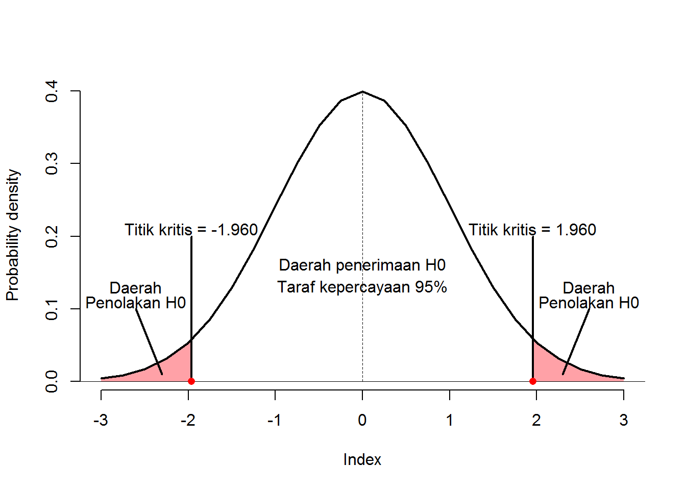

Bagian 2 Uji 2 Sampel Independen
2.1 Tujuan
- Mahasiswa mampu memahami konsep dasar pengujian 2 sampel independen
- Mahasiswa mampu melakukan melakukan pengujian 2 sampel independen secara manual
- Mahasiswa mampu melakukan melakukan pengujian 2 sampel independen menggunakan aplikasi pengolah data
2.2 Dasar Teori
Terkadang kita ingin mengetahui apakah sebuah kelompok data (sampel data) memiliki nilai rata-rata yang sama dengan kelompok data yang lain. Tentu kata “sama” dalam hal ini tidak memiliki arti sama persis sebab hal ini sangat jarang terjadi. Akan selalu ada kesalahan yang dapat ditolernasi di setiap pengujian.
Andaikan dari 10 sampel mahasiswa laki-laki diperoleh rata-rata tinggi badan = 168,5 dan dari 10 sampel mahasiswa perempuan diperoleh tinggi badan = 167,2. Apakah dapat disimpulkan bahwa tinggi badan mahasiswa laki-laki = tinggi badan mahasiswa perempuan? Jika “ya”, maka apa dasar pengambilan kesimpulan tersebut?
Uji 2 sampel independen merupakan uji statistik yang digunakan untuk menguji nilai rata-rata dari 2 kelompok/sampel/populasi yang saling bebas. Terdapat 2 pengujian yang dapat dilakukan pada kasus ini, yang pertama adalah Uji t 2 Sampel Independen (parametrik) dan Uji Mann Whitney (non-parametrik).
Berikut ini adalah contoh kasus 2 sampel independen (yang saling bebas):
- Kepala Dinas Kesehatan ingin menguji apakah ada perbedaan jumlah kunjungan pada puskesmas yang berada di daerah perkotaan dan daerah pedesaan.
- Seorang peneliti menduga bahwa terdapat perbedaan kandungan gizi antara roti tawar yang biasa dengan roti tawar yang telah ditambahkan dengan tepung kelor.
- Perusahaan farmasi A meyakini bahwa produk obat penurun gula darah yang mereka produksi dapat menurunkan kadar gula lebih baik daripada produk dari perusahaan farmasi B
2.2.1 Hipotesis Pengujian
Terdapat 3 hipotesis yang dapat digunakan dalam melakukan pengujian dengan menggunakan Uji t 2 Sampel Independen.
Hipotesis Satu Arah Kanan
Hipotesis ini digunakan untuk menguji apakah rata-rata dari suatu sampel/kelompok lebih besar dari sampel/kelompok yang lain. Hipotesis ditulis sebagai berikut:
\(H_0 : \mu_1-\mu_2 \leq d_0\)
\(H_1 : \mu_1-\mu_2 > d_0\)
Apabila \(d_0 = 0\), maka hipotesis akan menjadi:
\(H_0 : \mu_1 \leq \mu_2\)
\(H_1 : \mu_1 > \mu_2\)
Daerah penolakan dan penerimaan \(H_0\) pada \(\alpha = 5\%\) dan \(df = 10000\) dapat dilihat pada gambar berikut:

Penolakan \(H_0\) dilakukan apabila nilai \(t_{hitung}\) berada pada daerah penolakan H0 (\(t_{hitung}\) > nilai kritis \(1.645\)).
Hipotesis Satu Arah Kiri
Hipotesis ini digunakan untuk menguji apakah rata-rata dari suatu sampel/kelompok lebih kecil dari sampel/kelompok yang lain. Hipotesis ditulis sebagai berikut:
\(H_0 : \mu_1-\mu_2 \geq d_0\)
\(H_1 : \mu_1-\mu_2 < d_0\)
Apabila \(d_0 = 0\), maka hipotesis akan menjadi:
\(H_0 : \mu_1 \geq \mu_2\)
\(H_1 : \mu_1 < \mu_2\)
Daerah penolakan dan penerimaan \(H_0\) pada \(\alpha = 5\%\) dan \(df = 10000\) dapat dilihat pada gambar berikut:

Penolakan \(H_0\) dilakukan apabila nilai \(t_{hitung}\) berada pada daerah penolakan H0 (\(t_{hitung}\) < nilai kritis \(-1.645\)).
Hipotesis Dua Arah
Hipotesis ini digunakan untuk menguji apakah rata-rata dari suatu sampel/kelompok berbeda (dapat lebih besar atau lebih kecil) dari sampel/kelompok yang lain. Hipotesis ditulis sebagai berikut:
\(H_0 : \mu_1-\mu_2 = d_0\)
\(H_1 : \mu_1-\mu_2 \neq d_0\)
Apabila \(d_0 = 0\), maka hipotesis akan menjadi:
\(H_0 : \mu_1 = \mu_2\)
\(H_1 : \mu_1 \neq \mu_2\)
Daerah penolakan dan penerimaan \(H_0\) pada \(\alpha = 5\%\) dan \(df = 10000\) dapat dilihat pada gambar berikut:

Penolakan \(H_0\) dilakukan apabila nilai \(t_{hitung}\) berada pada daerah penolakan H0 (\(t_{hitung}\) < nilai kritis \(-1.960\) bila \(t_{hitung}\) negatif atau \(t_{hitung}\) > nilai kritis \(1.960\) bila \(t_{hitung}\) positif).
2.2.2 Uji t 2 Sampel Independen
Uji t 2 Sampel Independen memiliki beberapa asumsi yang harus terpenuhi, yaitu:
- Sampel/kelompok diambil secara acak
- Sampel/kelompok independen
- Sampel/kelompok berasal dari populasi yang berdistribusi normal
- Memiliki varians antar sampel/kelompok yang sama (homogen)
Namun pada kasus kedua sampel tidak memiliki varians yang sama (homogen), uji dapat dilanjutkan dengan menggunakan derajat kebebasan yang berbeda.
Formula untuk Uji t 2 Sampel Independen (\(t_{hitung}\)) dengan asumsi varians antar kelompok sama ialah sebagai berikut: \[ t = \frac{(\bar{X_1}-\bar{X_2})-(\mu_1-\mu_2)}{\sqrt{\frac{\sigma_1^2}{n_1}+\frac{\sigma_2^2}{n_2}}} \] dimana:
- derajat kebebasan sama dengan \(n-1\) (pada kasus \(n_1\) dan \(n_2\) yang sama)
- pada kasus varians populasi (\(\sigma^2\)) tidak diketahui maka \(\sigma^2 = s^2 = \frac{\sum(x_i-\mu)}{n-1}\).
Selain itu, \(t_{hitung}\) juga dapat dihitung dengan formula berikut: \[ t = \frac{(\bar{X_1}-\bar{X_2})-(\mu_1-\mu_2)}{s_p\sqrt{\frac{1}{n_1}+\frac{1}{n_2}}} \] dimana \(s_p = \sqrt{\frac{(n_1-1)s^2_1+(n_2-1)s^2_2}{n_1+n_2-2}}\).
Apabila hasil pengujian varians dinyatakan bahwa kedua sampel/kelompok tidak memiliki varians yang sama (homogen), maka derajat kebebasan dihitung dengan formula berikut: \[ d.f = \frac{(s_1^2/n_1+s_2^2/n_2)^2}{(s_1^2/n_1)^2/(n_1-1)+(s_2^2/n_2)^2/(n_2-1)} \]
2.2.2.1 Contoh
Berikut adalah contoh-contoh pengujian dengan menggunakan Uji t 2 Sampel Independen
2.2.2.1.1 Kasus 1
Diketahui bahwa dalam 8 kali percobaan, rata-rata Ani dapat mengetik sebanyak 105 kata dengan standar deviasi 7 kata dalam waktu 1 menit. Dengan jumlah percobaan yang sama dengan Ani, Rudi dapat mengetik dengan rata-rata 115 kata dengan standar deviasi 10 dalam waktu 1 menit. Dengan menggunakan \(\alpha\) sebesar 5%, apakah dapat disimpulkan bahwa Rudi dapat mengetik lebih cepat daripada Ani? Varians antar kelompok diasumsikan homogen.
Jawab
| Statistik | Ani | Rudi |
|---|---|---|
| n | 8 | 8 |
| rata-rata | 105 | 115 |
| standar deviasi | 7 | 10 |
Langkah-langkah pengerjaan
- Tentukan hipotesis pengujian:
\(H_0 : \mu_1 \leq \mu_2\)
\(H_1 : \mu_1 > \mu_2\)
dimana \(\mu_1\) adalah rata-rata mengetik Rudi (populasi) dan \(\mu_2\) adalah rata-rata mengetik Ani (populasi) - Hitung derajat kebebasan \(dk = n - 1 = 8 - 1 = 7\).
- Tentukan nilai \(t_{tabel}\) dengan \(alpha=0.05\) dan \(dk = 7\), sehingga \(t_{(0.05,7)} = 1,8946\).
- Hitung nilai \(t_{hitung}\) dengan menganggap bahwa \(\mu_1-\mu_2 = 0\), maka:
\[ t_{hitung} = \frac{(\bar{X_1}-\bar{X_2})}{\sqrt{\frac{s_1^2}{n_1}+\frac{s_2^2}{n_2}}} \] \[ t_{hitung} = \frac{(115-105)}{\sqrt{\frac{10^2}{8}+\frac{7^2}{8}}} = 2,32 \] - Bandingkan \(t_{hitung}\) dengan \(t_{tabel}\) (\(2,32 > 1,8946\)).
- Pengambilan keputusan: Tolak \(H_0\) (karena \(t_{hitung}\) lebih besar dari \(t_{tabel}\)).
Sehingga dapat disimpulkan bahwa dengan menggunakan \(alpha = 5\%\) Rudi mengetik lebih cepat daripada Ani.
2.2.2.1.2 Kasus 2
Dekan Fakultas XX menyatakan bahwa tekanan darah pria lansia lebih rendah daripada wanita lansia. Penelitian dilakukan untuk menguji teori tersebut dengan mengambil 20 pria dan 20 wanita lansia dan diukur tekanan darahnya. Hasil pengukuran menunjukkan bahwa rata-rata tekanan dara pria lansia adalah 115,6 dengan simpanan baku 7,3. Sedangkan hasil pengukuran pada wanita lansia menunjukkan rata-rata tekanan darah sebesar 121,5 dengan simpangan baku 11,2. Berdasarkan data tersebut, tentukan apakah pernyataan Dekan dapat dibenarkan dengan menggunakan \(\alpha=0.05\)?
Jawab
| Statistik | Pria | Wanita |
|---|---|---|
| n | 20.0 | 20.0 |
| rata-rata | 115.6 | 121.5 |
| standar deviasi | 7.3 | 11.2 |
Langkah-langkah pengerjaan
- Tentukan hipotesis pengujian:
\(H_0 : \mu_1 \geq \mu_2\)
\(H_1 : \mu_1 < \mu_2\)
dimana \(\mu_1\) adalah rata-rata pria lansia (populasi) dan \(\mu_2\) adalah rata-rata wanita lansia (populasi) - Hitung derajat kebebasan \(dk = n - 1 = 20 - 1 = 19\).
- Tentukan nilai \(t_{tabel}\) dengan \(alpha=0.05\) dan \(dk = 19\), sehingga \(t_{(0.05,19)} = -1,7291\).
- Hitung nilai \(t_{hitung}\) dengan menganggap bahwa \(\mu_1-\mu_2 = 0\), maka:
\[ t_{hitung} = \frac{(\bar{X_1}-\bar{X_2})}{\sqrt{\frac{s_1^2}{n_1}+\frac{s_2^2}{n_2}}} \] \[ t_{hitung} = \frac{(115.6-121.5)}{\sqrt{\frac{7.3^2}{20}+\frac{11.2^2}{20}}} = -6,44 \] - Bandingkan \(t_{hitung}\) dengan \(t_{tabel}\) (\(-6,44<-1,7291\)).
- Pengambilan keputusan: Tolak \(H_0\) (karena \(t_{hitung}\) lebih kecil dari \(t_{tabel}\)).
Sehingga dapat disimpulkan bahwa dengan menggunakan \(alpha = 5\%\) pernyataan Dekan Fakultas XX adalah benar.
2.2.2.1.3 Kasus 3
2.2.3 Uji Mann Whitney
2.3 Uji dengan SPSS
You can label chapter and section titles using {#label} after them, e.g., we can reference Chapter ??. If you do not manually label them, there will be automatic labels anyway, e.g., Chapter ??.
Figures and tables with captions will be placed in figure and table environments, respectively.

Figure 2.1: Here is a nice figure!
Reference a figure by its code chunk label with the fig: prefix, e.g., see Figure 2.1. Similarly, you can reference tables generated from knitr::kable(), e.g., see Table 2.3.
| Sepal.Length | Sepal.Width | Petal.Length | Petal.Width | Species |
|---|---|---|---|---|
| 5.1 | 3.5 | 1.4 | 0.2 | setosa |
| 4.9 | 3.0 | 1.4 | 0.2 | setosa |
| 4.7 | 3.2 | 1.3 | 0.2 | setosa |
| 4.6 | 3.1 | 1.5 | 0.2 | setosa |
| 5.0 | 3.6 | 1.4 | 0.2 | setosa |
| 5.4 | 3.9 | 1.7 | 0.4 | setosa |
| 4.6 | 3.4 | 1.4 | 0.3 | setosa |
| 5.0 | 3.4 | 1.5 | 0.2 | setosa |
| 4.4 | 2.9 | 1.4 | 0.2 | setosa |
| 4.9 | 3.1 | 1.5 | 0.1 | setosa |
| 5.4 | 3.7 | 1.5 | 0.2 | setosa |
| 4.8 | 3.4 | 1.6 | 0.2 | setosa |
| 4.8 | 3.0 | 1.4 | 0.1 | setosa |
| 4.3 | 3.0 | 1.1 | 0.1 | setosa |
| 5.8 | 4.0 | 1.2 | 0.2 | setosa |
| 5.7 | 4.4 | 1.5 | 0.4 | setosa |
| 5.4 | 3.9 | 1.3 | 0.4 | setosa |
| 5.1 | 3.5 | 1.4 | 0.3 | setosa |
| 5.7 | 3.8 | 1.7 | 0.3 | setosa |
| 5.1 | 3.8 | 1.5 | 0.3 | setosa |
You can write citations, too. For example, we are using the bookdown package (Xie 2020) in this sample book, which was built on top of R Markdown and knitr (Xie 2015).
References
Xie, Yihui. 2015. Dynamic Documents with R and Knitr. 2nd ed. Boca Raton, Florida: Chapman; Hall/CRC. http://yihui.name/knitr/.
Xie, Yihui. 2020. Bookdown: Authoring Books and Technical Documents with R Markdown. https://github.com/rstudio/bookdown.